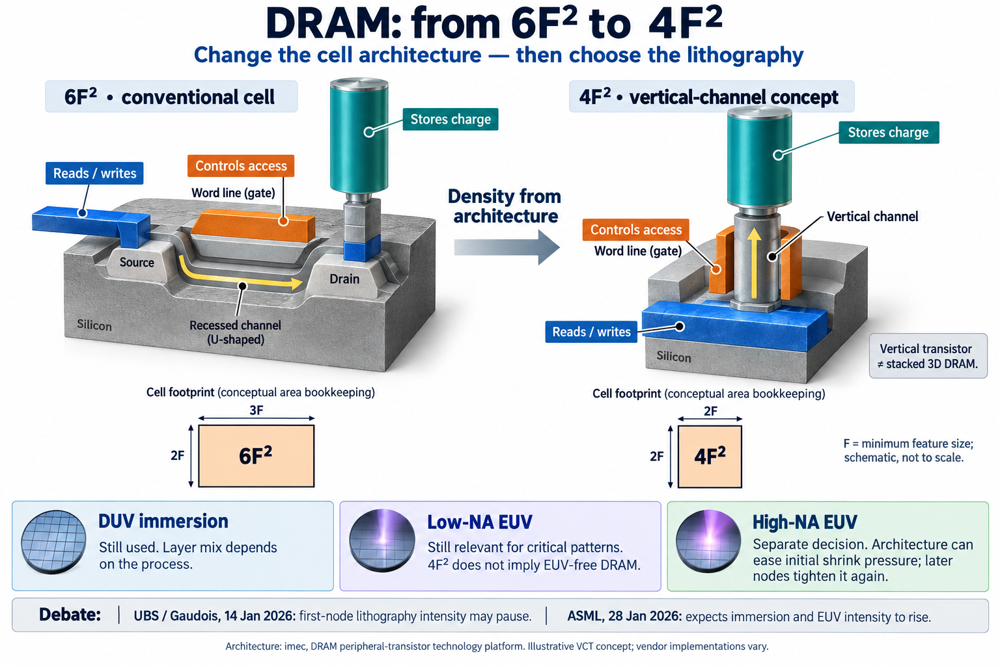

6F² conceptually 3F × 2F
Area notation; not a literal mask plan. F denotes minimum feature size. [1]
Capstone / Memory & semicap / Architecture explainer
From 6F² to 4F²: move the access channel into the vertical direction, gain density through architecture, then decide how to pattern the next node.
Research snapshot · 13 October 2026 Conceptual geometry · vendor flows differ3D is unavailable in this browser. The reference illustration and research below remain available.

Area notation; not a literal mask plan. F denotes minimum feature size. [1]
At the same F, the architecture occupies less cell area. This alone does not specify whole-die size. [1]
Architecture, critical pitch and integration decide the mix of DUV, conventional EUV and High-NA. [2–4]
| Patterning route | What survives the transition | What remains uncertain |
|---|---|---|
| DUV immersion | Remains in the process mix. Changing transistor geometry does not make every layer require EUV. | Layer selection and multipatterning loops depend on the chosen process. ASML expects immersion intensity to rise. [2] |
| Low-NA EUV | Still used for critical patterns; can replace complex DUV multipatterning. | First-node exposure intensity is disputed: UBS allows a pause; ASML expects an increase. [2,3] |
| High-NA EUV | A separate patterning decision, not an automatic consequence of a vertical transistor. | UBS's September checks associate staying at 6F² with a stronger case for earlier High-NA. Later 4F² shrink also brings it back into consideration. [3,4] |
Interpretation: lithography intensity is not the same metric as scanner shipments. Exposure requirements, wafer starts, dose, availability and throughput all matter. No equipment-unit forecast is implied.
Describes the capacitor/access-transistor cell, the move toward vertical architectures and 6F² → 4F². Publication date not shown on the page; accessed 13 October 2026.
Read the technical reference ↗Management expects both immersion and EUV lithography intensity to increase as DRAM migrates to 4F². This is a company expectation, not a measured outcome of all vendor transitions.
Read the company transcript ↗The first 4F² node can ease design-rule pressure and leave lithography intensity flat or lower. Subsequent shrink requires more advanced lithography. Dated baseline: later vendor architecture choices remain open.
Read the attributed wiki debate · Archived noteSamsung's base case remains 4F² at 0a; High-NA use is still in question. SK hynix's choice between 4F² / Low-NA and 6F² / High-NA is not final; UBS reports momentum for 6F². These are broker checks, not confirmed production flows.
Read the dated checks in the ASML page